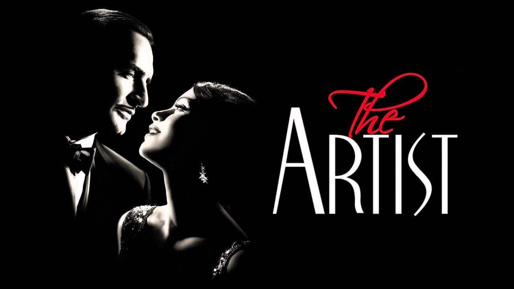

Топ 10 фильмов 2011 года
-
"Начало" (Inception)
Режиссер: Кристофер Нолан
Описание: Доминик Кобб — специалист по извлечению информации, работающий в мире снов. Ему поручают сложную задачу не извлечь, а внедрить идею в сознание человека. Во время выполнения задания Кобб сталкивается с собственными демонами, которые угрожают его успеху. Фильм исследует темы разума, снов и реальности.
-
"Социальная сеть" (The Social Network)

Режиссер: Дэвид Финчер
Описание: Фильм рассказывает историю создания Facebook и о становлении Марка Цукерберга, начиная от его студенческой жизни в Гарвардском университете до юридических битв с бывшими друзьями и партнерами. Это история о дружбе, предательстве и амбициях в эпоху интернета.
-
"Полночь в Париже" (Midnight in Paris)

Режиссер: Уди Аллен
Описание: Молодой писатель Гил Пендлтон путешествует в Париж со своей невестой. Он неожиданно начинает попутешествовать во времени, встречая известных деятелей искусства и литературы 1920-х годов. Фильм исследует ностальгию и ценность современных времен.
-
"Артист" (The Artist)

Режиссер: Мишель Хазанавичус
Описание: Молдавский фильм о немом кино, который рассказывает историю любви между актёром немого кино и молодой актрисой, находящейся на пороге успеха в эпоху прихода звукового кино. Фильм является данью уважения к классическому кинематографу.
-
"Миссия невыполнима: Протокол Фантом" (Mission: Impossible – Ghost Protocol)
Режиссер: Брэд Бёрд
Описание: В четвертой части франшизы Агент Итан Хант и его команда должны очистить имя IMF, после того как их обвиняют в теракте в Кремле. Фильм наполнен захватывающими экшен-сценами и сложными трюками.
-
"Семь психопатов" (Seven Psychopaths)

Режиссер: Мартин Макдона
Описание: Сценарист по имени Мартин оказывается в странной ситуации, когда его лучший друг ворует собаку мафиозного босса. Мартин и его друзья пытаются вернуть собаку, но оказываются в центре криминальных разборок.
-
"Человек на луне" (The Man on the Moon)

Режиссер: Рон Ховард
Описание: Фильм является биографией комика Эндри Сандлера, одного из самых известных комиков 20 века. Он рассказывает о его карьере и о том, как он справлялся с личными и профессиональными трудностями.
-
"Трансформеры: Темная сторона Луны" (Transformers: Dark of the Moon)
Режиссер: Майкл Бэй
Описание: Третья часть франшизы "Трансформеры" показывает победу автоботов над десептиконами. Битва за Землю разворачивается на фоне скрытых агентов и новых технологий, направленных на спасение человечества.
-
"Король говорит!" (The King's Speech)
Режиссер: Том Хупер
Описание: История о короле Георге VI, который, страдая от заикания, находит поддержку у логопеда Лайонела Лога. Фильм исследует тему лидерства, доверия и преодоления личных трудностей.
-
"Безумный Макс: Дорога ярости" (Mad Max: Fury Road)
Режиссер: Джордж Миллер
Описание: Постапокалиптический экшен, в котором Макс Рокатански и Фуриоза пытаются сбежать от тирании с опасными преследователями. Фильм полон захватывающих погонь и действия, ставит акцент на борьбу за выживание и свободу.